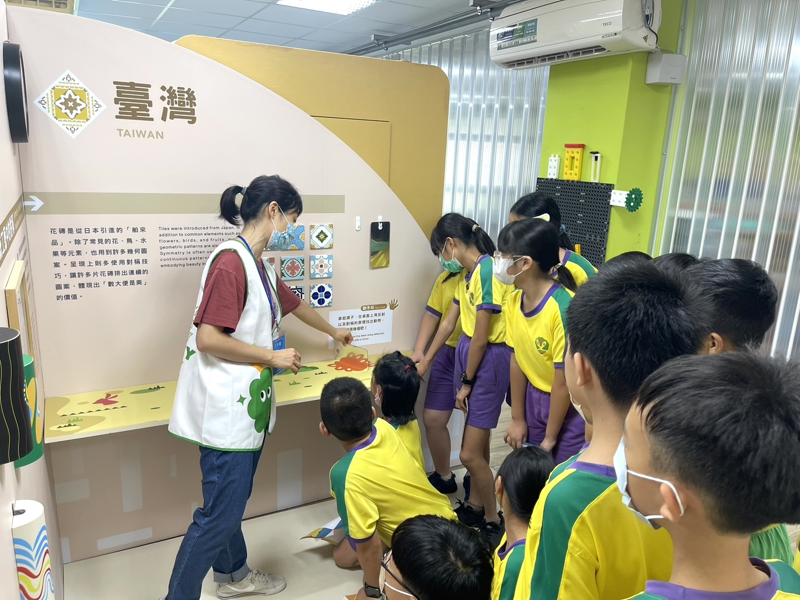
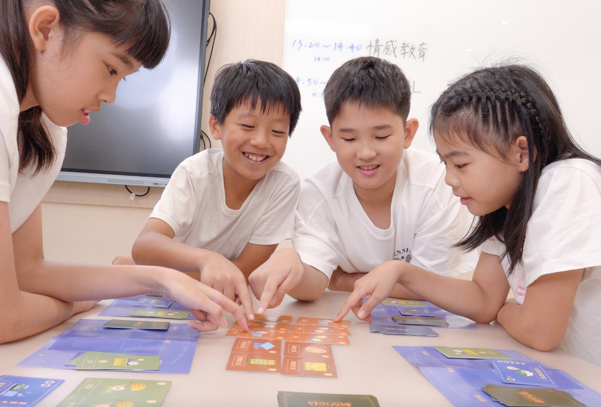
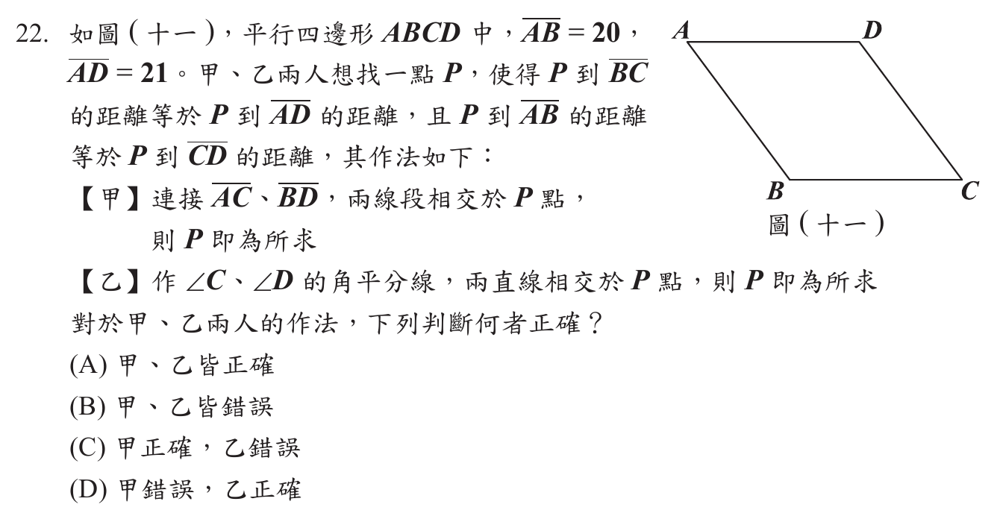
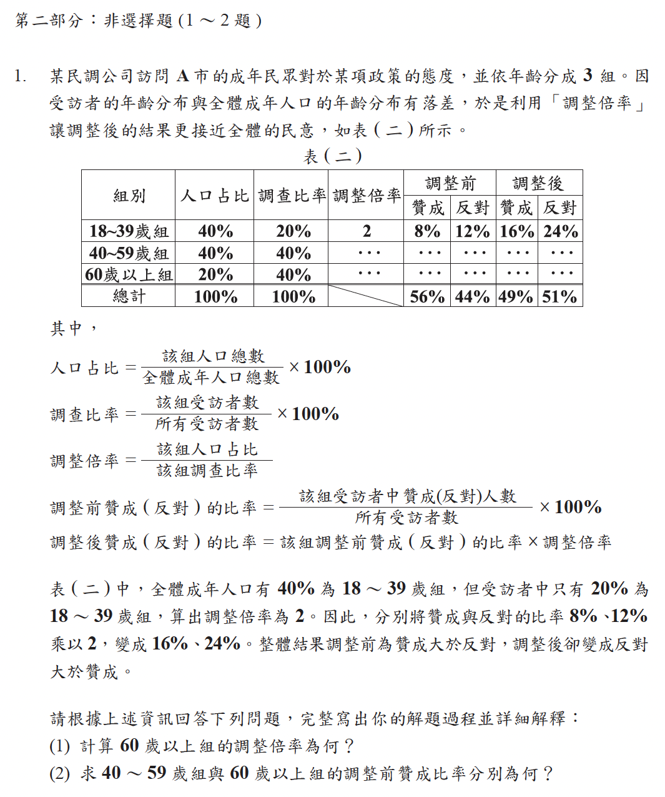
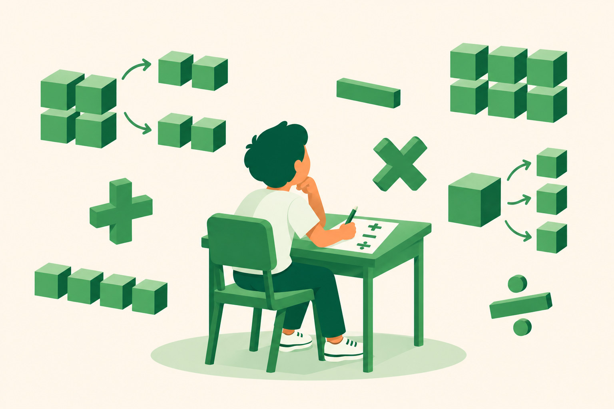
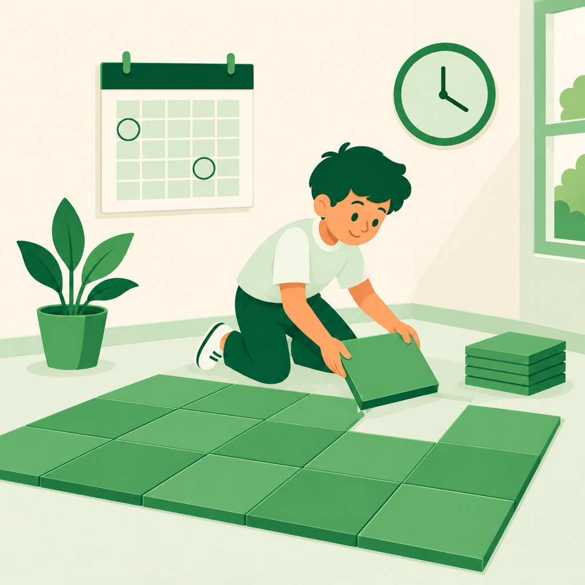
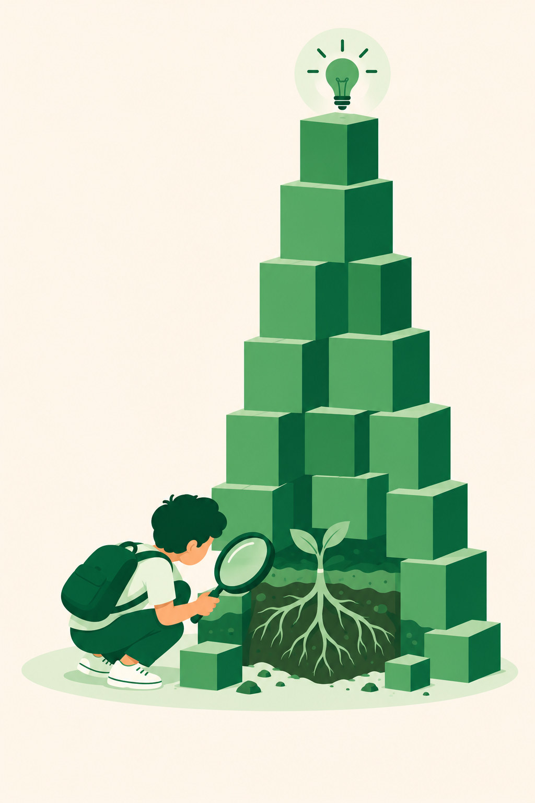
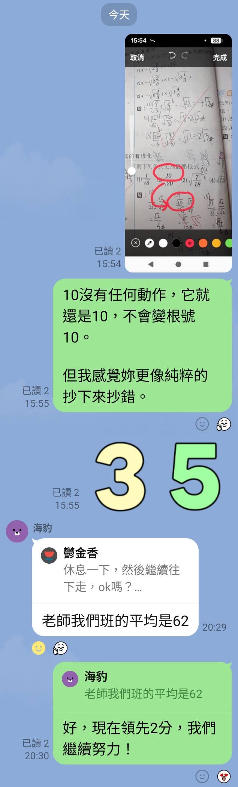
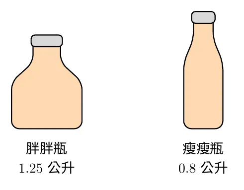
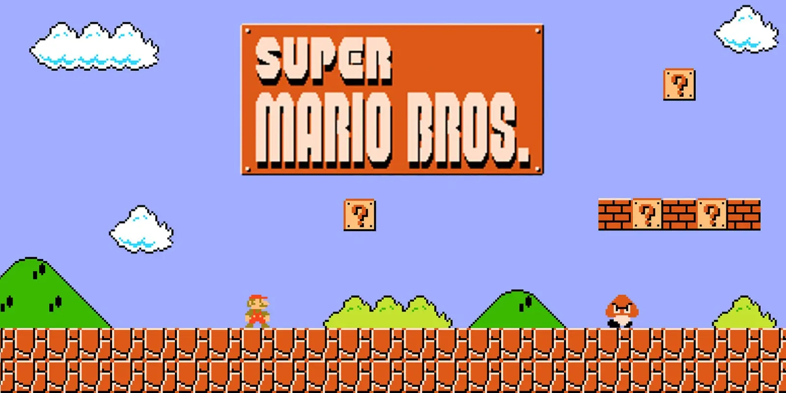

1
2
3
老張在夜市擺攤賣古早味紅茶。他煮了一大桶容量為整數公升的紅茶，準備全部裝瓶販售。他考慮兩種不同容量的瓶子，如附圖所示：
胖胖瓶：每個容量 1.25 公升。
瘦瘦瓶：每個容量 0.8 公升。
老張計算後發現，如果把這桶紅茶全部裝滿瘦瘦瓶，會比全部裝滿胖胖瓶多出 9 個瓶子，且無論選哪一種瓶子，整桶紅茶都能剛好裝完沒有剩下。
請問，如果老張最後決定改用容量 0.5 公升的杯子來裝這桶紅茶，可以裝滿多少杯？


「我不需要再去跟別人比較……我應該把注意力集中在當下的這場數學考試中，專注於我現在能達到的目標。」
「……如果我總是在擔心截止時間，我的焦點就一直是在『未來』，而不是當下真正需要完成的工作上。」
嘗試解題時學到的，不論成功、失敗或只有一點進展，往往比最後的答案更有價值